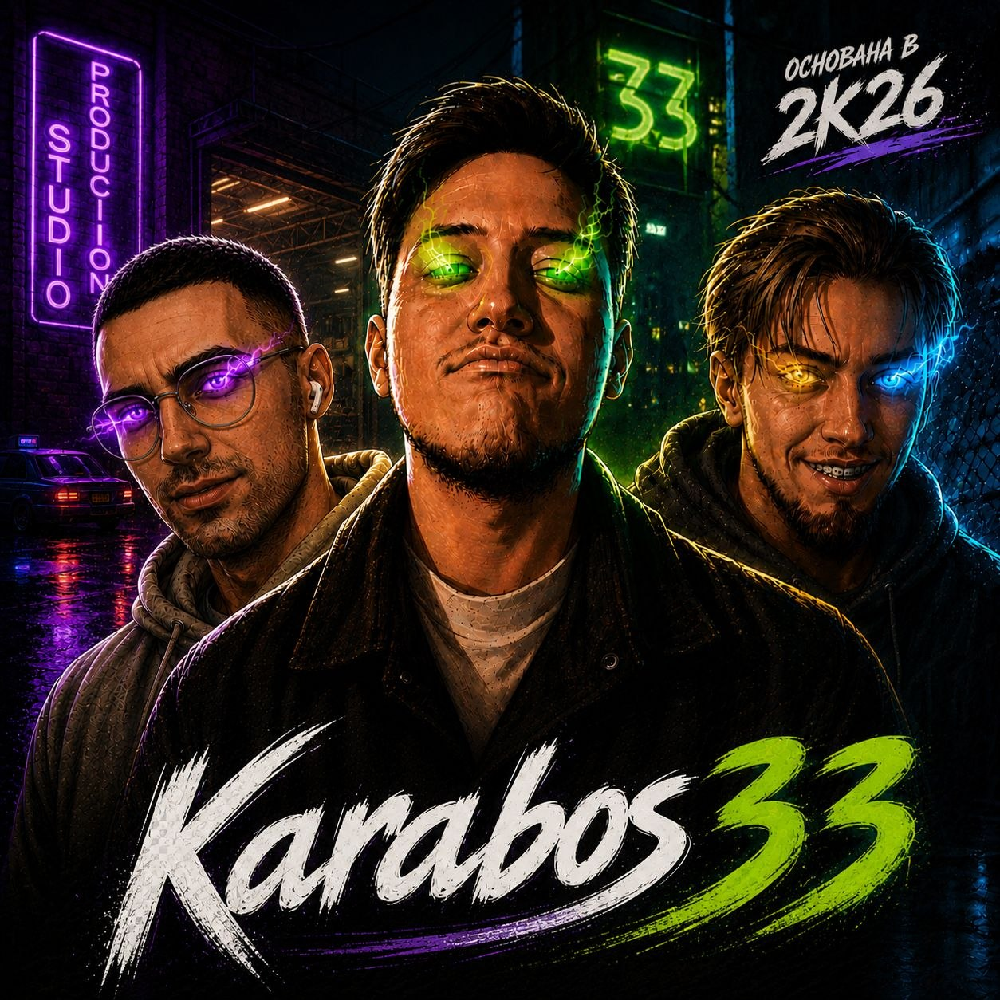

Karabos33 Production Studio
О команде
«Сказки Мертвеца» — независимый творческий проект, над которым работает небольшая команда единомышленников.
Познакомиться со студией
Творческая студия
Одна цель.
Разные форматы.
Нас объединяет одна цель — создать масштабную авторскую вселенную, которая будет жить не только на страницах книг, но и в иллюстрациях, видеороликах, музыке и других форматах.
Сегодня команда состоит всего из нескольких человек
Процесс создания
Чем мы занимаемся
Работа над проектом включает несколько направлений:
🌐 Разработка и поддержка официального сайта.
🎬 Создание кинематографических видеороликов по событиям книг.
🎞 Монтаж и оформление видеоматериалов.
🎨 Подготовка иллюстраций и визуальных материалов.
Наша философия
Мы не стремимся просто выпустить очередную книгу. Наша цель — создать мир, который будет постепенно расти и развиваться вместе с читателями. Каждая новая глава, иллюстрация, видеоролик или статья энциклопедии становятся частью одной большой истории.
Развитие студии
Это только начало
Сегодня команда состоит всего из нескольких человек, но проект постоянно развивается. Со временем мир «Сказок Мертвеца» станет больше, а вместе с ним будет расти и команда, работающая над его созданием.
О проекте